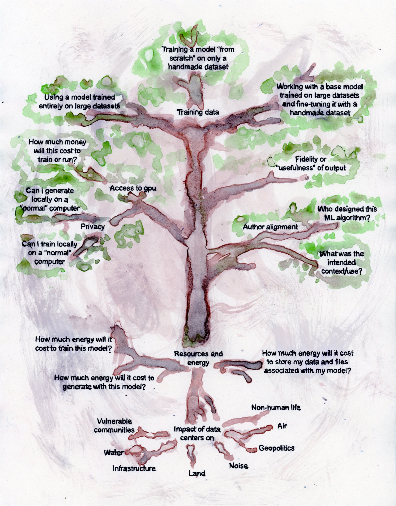

Handmade Datasets: Strategies for working critically with small data and Artificial Intelligence

.・゜゜・*:･ﾟ✧ ₊ ⊹ . ˖ . .・゜゜・．.⋆｡⋆˚⋆.・.・☾.・゜゜・*:･ﾟ✧ ₊ ⊹ . ˖ . .・゜゜・．.⋆｡⋆˚⋆.・.・☾
SFPC Summer 2026
₊˚ ✧---. ˖--･--------------⊱⋆⊰--------------･--˖ .--- ✧ ˚₊
About
This course unpacks the data pipeline behind large AI systems. Students learned how websites get crawled, how images and their alt-text descriptions become training material, how click-worker labor and automated systems process data, and how all of this shapes what a model generates. Along the way, we consider the ethical issues around ownership and authorship of material, labor conditions of click-workers, and dangers of relying on automated systems to filter out harmful content. We then proposed an alternative to these systems: "handmade datasets," or human-scale, personally assembled datasets used to train smaller kinds of Machine Learning models with specific intention. Students built personal datasets ranging from satellite screenshots of farmland on the US-Mexico border, scanned images of their child’s drawings, historical recipes for dumplings, to images collected from friends about the feeling of home.
While the class covered different kinds of image, text, and audio models, most of the projects here use pix2pix, an image-to-image translation model that learns to turn one kind of image into another by training on paired examples; each result is shown as an input, a target (the paired images the model was trained to produce), and a generated image (what the model actually generated once trained). Two projects work with text instead: one uses RAG (retrieval-augmented generation), a method that allows locally run language models to pull from a specific set of documents to shape its responses; the other uses microGPT, a small version of the transformer architecture behind large language models like GPT, trained from scratch on a narrow list of words/phrases rather than the entire internet.
Together, these projects ask what can be learned from a small, intentional dataset, and what it means to consider our relationships to material, data, labor, environment and other living beings. They trace where a dataset actually comes from and embrace the meaningful friction of the labor and care that collecting it required. These slower processes make visible what gets glossed over when data collection happens at the scale and speed of the general-purpose models like ChatGPT or Midjourney that we are pressured to use every day.
₊˚ ✧---. ˖--･--------------⊱⋆⊰--------------･--˖ .--- ✧ ˚₊
Participant Work
₊˚ ✧---. ˖--･--------------⊱⋆⊰--------------･--˖ .--- ✧ ˚₊
Deepest gratitude to Isabella Haid and all the participants of this course and its previous iterations for helping to collectively shape my own understanding of these interconnected issues around so-called Artificial Intelligence. Thank you to Tommy Martinez for so generously sharing your practice with our class. I am also grateful for the space that was held to rest and recuperate from the emotional weight of our current political/economic/cultural landscape when it comes to AI ~ which I feel so often decenters the dignity of human and non-human life.
・*:･ Aarati
